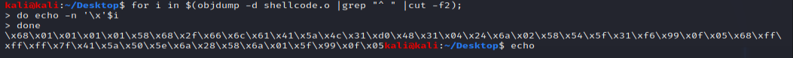

for i in $(objdump -d helloworld |grep "^ " |cut -f2)
>> do echo -n '\x'$i
>> done
>> echo

or
BEST SHELLCODE EXTRACTION:
objdump -d ./shellcode|grep '[0-9a-f]:'|grep -v 'file'|cut -f2 -d:|cut -f1-6 -d' '|tr -s ' '|tr '\t' ' '|sed 's/ $//g'|sed 's/ /\\x/g'|paste -d '' -s |sed 's/^/"/'|sed 's/$/"/g'
meh:- for i in $(objdump -d shellcode.o |grep "^ " |cut -f2); do echo -n '\x'$i; done; echo; print ""
- --print at the end is only to give more space since linux terminal sucks cock
mov [rsp], 1
- "Move 1 into the address stored in rsp"
-or in C terms
xor the thing stored at the address of rsp with rax; then store it at the address of rsp again
ln command - link
ln -s /flag f
then catf